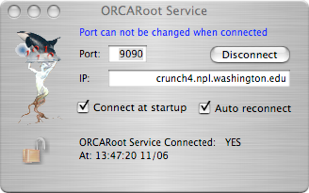
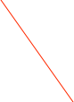

ORCARoot

ORCARoot is a ROOT-based toolkit of C++ class libraries that interface with ORCA data streams. Typically, ORCARoot is used to write the data stream directly into ROOT TTrees, histograms, and other ROOT objects, and store them in a ROOT TFile for quick and immediate processing. However, ORCARoot is general enough to serve as the ORCA data stream interface for more complex event building processes, whether or not such processes use ROOT objects or files. ORCARoot can also act as a server daemon, handling real-time requests from ORCA to perform such tasks as curve fitting and Fourier analysis.
For questions/information, contact jasondet@gmail.com, or mmarino@gmail.com. Also see the full ORCARoot Documentation (Opens a new window).
The ORCARoot analysis application can also be run as a standalone daemon to provide data fits to ORCA. When run in this mode ORCARoot will not attempt to connect to ORCA as a data analysis package.
CENPA is currently running an ORCARoot daemon at crunch4.npl.washington.edu port 9090 and ORCA defaults to this location. However, this may change without notice. See the ORCARoot documentation for more information.
Open the fit service via Main Menu->ORCARoot or from the main configuration dialog tool bar if you have customized the tool bar to display ORCARoot icon.

Connect/Disconnect. Note that if you are connected, you can not change the port number without disconnecting first
Location that you have an ORCARoot app running as a standalone daemon.
Current connection status

If selected and the fit service is not available, ORCA will repeatedly attempt to reconnect several times/minute.
I. Installation
1) Run ./configure [--with-rootsys=/path/to/root]
This should make sure your system can compile and install ORCARoot.
A failure here should generate a message that can aid in rectifying
the problem.
2) make
3) set env vars:
On Mac OS X:
setenv ORDIR [path to ORCARoot directory, e.g. /home/ORCARoot]
setenv PATH $ORDIR/bin:$PATH
setenv DYLD_LIBRARY_PATH $ORDIR/lib:$DYLD_LIBRARY_PATH
On Linux:
setenv ORDIR [path to ORCARoot directory, e.g. /home/ORCARoot]
setenv PATH $ORDIR/bin:$PATH
setenv LD_LIBRARY_PATH $ORDIR/lib:$LD_LIBRARY_PATH
4) Set up a directory for your own work. Use the files
$ORDIR/UserMakefileExample (rename it "Makefile) and
$ORDIR/Applications/ORCARoot.cc (rename it something like
ORCARoot_[project].cc) as examples to help get you started in
making your own standalone executable. If you write any generally
useful Decoders or Processors, contact me (jasondet@gmail.com)
about adding them to the CVS repository. See Section II: General
Description below for a description on how these executables generally
work.
5) Typical usage to run an ORCARoot executable:
ORCARoot Run[#]
^^^^^^ raw data file output by ORCA
^^^^^^^^ executable; may be named something else (like ORCARoot_[project])
Should be in the $ORDIR/bin directory.
There are additionally several options to the provided examples
executables. Entering just the executable (with no arguments or data
files) will typically list the usage information and available options.
II. General Description
The reading of the ORCA data stream is handled by the IO virtual
class ORVReader, which has two concrete implementations: ORFileReader
for reading from ORCA files on disk, and ORSocketReader for reading
data broadcast over a network socket. At the beginning of a run,
the ORVReaders read in the ORCA file header into an ORHeader object
which is stored for the rest of the run. Then the ORVReaders read
data records one by one into buffers of binary data that may then
be passed to other objects for processing.
The format of the binary data is likely different for each DAQ
component in the data stream. Therefore dedicated objects must be
created to process data from each component. In general several
different tasks might be desired for each DAQ component. For example,
one might wish to write data from a particular component to a TTree
and save it to disk AND simultaneously pass the same data to a
histogram to be displayed online. To provide a clean separation
between different tasks and to minimize replicated code, the
processing is divided among two sets of classes: decoders and
processors. Decoders handle the conversion of the binary data into
more user-friendly data types, typically UInt_t's (see footnote 1),
although the user is free to extract the binary data into any type
of object desired. Processors are the objects that use the decoders
to extract the data and perform a particular task. It is intended
that a separate processor be made to perform each desired task.
This improves readability, encapsulation, and configurability of
the code.
Implementing ORCARoot for a particular DAQ setup will primarily
involve the simple task of writing a decoder for each data producing
component, followed by the more intensive task of creating a system
of processors to perform the desired tasks, and finally creating
an executable in which the processors are deployed. This last step
can usually be performed by simply copying and modifying the ORCARoot
executable source code. To ease the burden on a new user, the toolkit
contains a variety of example decoders, processors, and applications.
Moreover, for simple data components such as an ADC whose contents
can be interpreted as a set of UInt_t's to be written to a TTree
or histogramed, basic processors have been written to automate the
tree writing and histogram filling tasks. See some of the example
ADC decoders listed below that use this basic tree / histogram
writing interface. For more complicated processing, a base class
ORDataProcessor provides the following set of virtual functions to
define the processing interface:
- StartProcessing() - called before any data is read
- StartRun() - called at the start of each run
- ProcessMyDataRecord(long* record) - called whenever a data record
associated with the processor is received; this is where typical
processors perform the bulk of their work
- EndRun() - called at the end of each run
- EndProcessing() - called at the end of processing
By implementing the above functions appropriately, and by combining
interrelated processors into ORCompoundProcessors, most processing
tasks should be achievable.
The ORDataProcManager class performs the central management of the
data record reading loop and the issuing of the records to the
various processors active in a run. Users wishing to become familiar
with the structure of the code and the flow of processing should
attempt to read and understand the functions
ORDataProcManager::ProcessDataStream() and it's subfunction,
ORDataProcManager::ProcessRun(). It will be necessary to understand
the the EReturnCode conventions used in the ORDataProcessor interface
and their special meaning to an ORCompoundProcessor, of which
ORDataProcManager is a derived class; see ORDataProcessor.hh and
ORCompoundProcessor.hh for details.
III. Toolkit Contents
Below is a list of all of the ORCARoot directories and a description
of their contents. The directories are listed in dependency-order,
and their contents are listed roughly in order of importance. See
the source code for details on the particular classes.
Disclaimer: I apologize in advance that not all of the source code
is properly documented. I only hope that the code itself is clear
enough that the user can get a general idea of how it works without
the help of extensive comments. Please contact me with any questions:
Util
- ORLogger: utility for centralized info/error logging
- ORVSigHandler: virtual base class for objects that need to perform
special clean-up procedures on SIGINT (ctrl-c)
- ORUtils: bit-swapping utilities for cross-platform endian issues
Decoders
- ORVDataDecoder: virtual base classes for decoders. Derived classes
must define a function that returns a string containing the path to
its associated data record's description in the header.
- ORBasicDataDecoder: wrapped version of ORVDataDecoder for use primarily by
ORVReader; not associated with a particular data-producing DAQ component¨
- ORVBasicTreeDecoder: virtual base class defining interface for decoders
that can be made to write their data to a simple TTree, where the
branches are all UInt_t's (see ORBasicTreeWriter). Relieves the
user of the need to write an entire processor for this simple task.
- ORVHistDecoder: like ORVBasicTreeDecoder, but for TH1's (see
ORHistWriter)¨
- A few data-component-specific data decoders. Note that this list is changing as objects are added to ORCA so it is not meant to be complete.
(naming convention: OR + ORCA header identifier + Decoder)
- ORRunDecoder: decodes the run data record; the name of this decoder
does not follow the naming convention.
- ORAD413ADCDecoder: example of ORVBasicTreeDecoders and
ORVHistDecoders.
- ORAD811ADCDecoder: another example of ORVBasicTreeDecoders and
ORVHistDecoders.
- ORL2551ScalersDecoder: example of reading an array of data out
of a data record.
- ORShaperShaperDecoder: another example of ORVBasicTreeDecoders
and ORVHistDecoders.
- ORTek754DScopeDataDecoder: another example of reading an array
of data out of a data record.
IO
- ORVReader: virtual base class for readers.
- ORFileReader: reads data from an ORCA file.
- ORSocketReader: reads data from a network socket.
- ORHeader: encapsulates ORCA's xml-header.
- ORDictionary: represents the header's xml-tree structure.
Processors
- ORRunContext: stores global information common to all processors, for
example the current run number, whether the run has started, etc.
- ORDataProcessor: base class for data processors. Each data processor
holds a pointer to an ORVDataDecoder which associates the processor with
a single data record type (except for ORUtilityProcessor, whose
ORVDataDecoder pointer is NULL, see below).
- ORVTreeWriter: virtual base class for processors that write data
to TTrees -- automates the TTree building, filling (if desired), and
writing.
- ORBasicTreeWriter: processor that uses an ORVBasicTreeDecoder to write
simple data (a list of UInt_t's) to a TTree.
- ORHistWriter: processor that uses an ORVHistDecoder to fill a histogram.
- ORUtilityProcessor: base class for processors that don't process data and
therefore do not need access to a decoder.
- ORFileWriter: ORUtilityProcessor that handles the opening and
closing of a ROOT TFile for each run.
- ORCompoundDataProcessor: ORUtilityProcessor that holds a list of
ORDataProcessors, executing them in-order for each of the processing
interface functions. ORCompoundDataProcessors can hold other
ORCompoundDataProcessors in their list.
- A few data-component-specific processors
(naming convention: associated decoder class name - Decoder +
direct base class suffix, i.e. Processor or TreeWriter)
- ORRunDataProcessor: this processor has the special task of managing the
state of fgRunContext.
- ORShaperShaperTreeWriter: simple tree writing example;
ORShaperShaperDecoder is already an ORVBasicTreeDecoder so this class
really isn't necessary, but is instructive.
- ORL2551ScalersTreeWriter: tree writing example in which the
tree is filled manually. This processor is obsolete as of January
2006; one obtains the same tree by give an ORBasicTreeWriter an
ORL2551ScalersDecoder*. Kept for backwards compatibility (in
particular, for ORCARoot_minesh).
- ORTek754DScopeDataTreeWriter: example of writing non-simple data to a
tree (in this case, an array of integers representing a scope trace).
Management
- ORDataProcManager: central class that manages processing.
- ORProcessStopper: manages a parallel thread process that runs a
UI from which ORCARoot can be killed nicely after processing the
current data record or halted nicely after processing for the
current run completes.